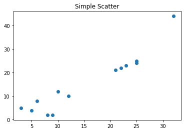
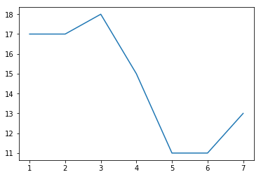
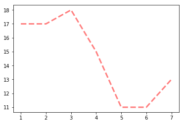
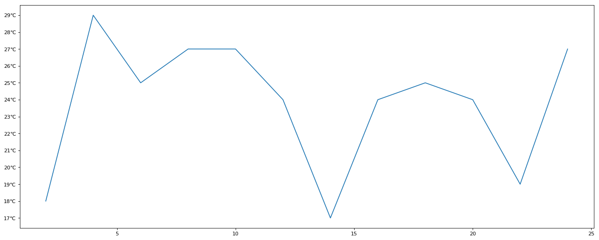
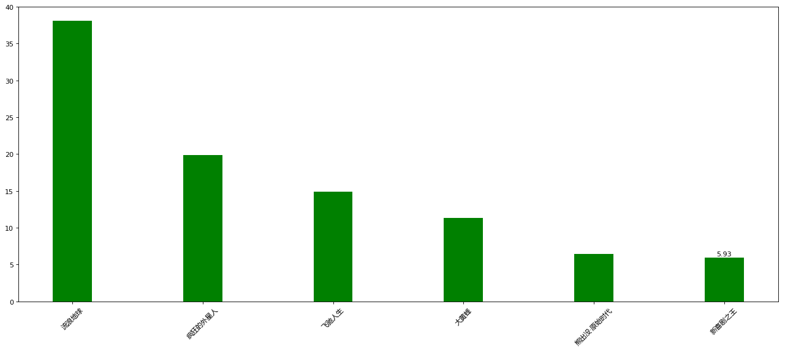

matplotlib介绍
Matplotlib是一个Python2D绘图库，它可以在各种平台上以各种硬拷贝格式和交互式环境生成出具有出版品质的图形。 Matplotlib可用于Python脚本，Python和IPython shell，Jupyter笔记本，Web应用程序服务器和四个图形用户界面工具包。
Matplotlib试图让简单的事情变得更简单，让无法实现的事情变得可能实现。 只需几行代码即可生成绘图，直方图， 功率谱，条形图，错误图，散点图等。
为了简单绘图，pyplot模块提供了类似于MATLAB的界面，特别是与IPython结合使用时。 对于高级用户，您可以通过面向对象的界面或MATLAB用户熟悉的一组函数完全控制线条样式，字体属性，轴属性等。
matplotlib优点
可视化是在整个数据挖掘的关键辅助工具，可以清晰的理解数据，从而调整我们的分析方法。
- 能将数据进行可视化,更直观的呈现
- 使数据更加客观、更具说服力
例如下面两个图为数字展示和图形展示：

常见图形种类及意义
折线图：以折线的上升或下降来表示统计数量的增减变化的统计图
特点：能够显示数据的变化趋势，反映事物的变化情况。(变化)

散点图：用两组数据构成多个坐标点，考察坐标点的分布,判断两变量之间是否存在某种关联或总结坐标点的分布模式。
特点：判断变量之间是否存在数量关联趋势,展示离群点(分布规律)

- 柱状图：排列在工作表的列或行中的数据可以绘制到柱状图中。
特点：绘制连离散的数据,能够一眼看出各个数据的大小,比较数据之间的差别。(统计/对比)

- 直方图：由一系列高度不等的纵向条纹或线段表示数据分布的情况。 一般用横轴表示数据范围，纵轴表示分布情况。 特点：绘制连续性的数据展示一组或者多组数据的分布状况(统计)

- 饼图：用于表示不同分类的占比情况，通过弧度大小来对比各种分类。
特点：分类数据的占比情况(占比)

安装
source activate python37
pip install matplotlib
Matplotlib画图
# 导入模块
import matplotlib.pyplot as plt
# 在jupyter中执行的时候显示图片
%matplotlib inline
# 传入x和y, 通过plot画图
plt.plot([1, 0, 9], [4, 5, 6])
# 在执行程序的时候展示图形
plt.show()

matplotlib图像结构的认识

折线图
折线图的绘制
from matplotlib import pyplot as plt
x = range(1,8) # x轴的位置
y = [17, 17, 18, 15, 11, 11, 13]
# 传入x和y, 通过plot画折线图
plt.plot(x,y)
plt.show()

折线图的颜色和形状设置
from matplotlib import pyplot as plt
x = range(1,8) # x轴的位置
y = [17, 17, 18, 15, 11, 11, 13]
# 传入x和y, 通过plot画折线图
plt.plot(x, y, color='red',alpha=0.5,linestyle='--',linewidth=3)
'''
基础属性设置
color='red' : 折线的颜色
alpha=0.5: 折线的透明度(0-1)
linestyle='--' : 折线的样式
linewidth=3 : 折线的宽度
'''
'''
线的样式
- 实线(solid)
-- 短线(dashed)
-. 短点相间线(dashdot)
： 虚点线(dotted)
'''
plt.show()

折点样式
from matplotlib import pyplot as plt
x = range(1,8) # x轴的位置
y = [17, 17, 18, 15, 11, 11, 13]
# 传入x和y, 通过plot画折线图
plt.plot(x, y, marker='o')
plt.show()
'''
折点形状选择:
================ ===============================
character description
================ ===============================
``'-'`` solid line style
``'--'`` dashed line style
``'-.'`` dash-dot line style
``':'`` dotted line style
``'.'`` point marker
``','`` pixel marker
``'o'`` circle marker
``'v'`` triangle_down marker
``'^'`` triangle_up marker
``'<'`` triangle_left marker
``'>'`` triangle_right marker
``'1'`` tri_down marker
``'2'`` tri_up marker
``'3'`` tri_left marker
``'4'`` tri_right marker
``'s'`` square marker
``'p'`` pentagon marker
``'*'`` star marker
``'h'`` hexagon1 marker
``'H'`` hexagon2 marker
``'+'`` plus marker
``'x'`` x marker
``'D'`` diamond marker
``'d'`` thin_diamond marker
``'|'`` vline marker
``'_'`` hline marker
'''
plt.show()

设置图片的大小和保存
from matplotlib import pyplot as plt
import random
x = range(2,26,2) # x轴的位置
y = [random.randint(15, 30) for i in x]
# 设置图片的大小
'''
figsize:指定figure的宽和高，单位为英寸；
dpi参数指定绘图对象的分辨率，即每英寸多少个像素，缺省值为80 1英寸等于2.5cm,A4纸是 21*30cm的纸张
'''
# 根据画布对象
plt.figure(figsize=(20,8),dpi=80)
plt.plot(x,y) # 传入x和y, 通过plot画图
# plt.show()
# 保存(注意： 要放在绘制的下面,并且plt.show()会释放figure资源，如果在显示图像之后保存图片将只能保存空图片。)
plt.savefig('./t1.png')
# 图片的格式也可以保存为svg这种矢量图格式，这种矢量图放在网页中放大后不会有锯齿
# plt.savefig('./t1.svg')

绘制x轴和y轴刻度
from matplotlib import pyplot as plt
x = range(2,26,2) # x轴的位置
y = [random.randint(15, 30) for i in x]
plt.figure(figsize=(20,8),dpi=80)
# 设置x轴的刻度
# plt.xticks(x)
# plt.xticks(range(1,25))
# 设置y轴的刻度
# plt.yticks(y)
# plt.yticks(range(min(y),max(y)+1))
# 构造x轴刻度标签
x_ticks_label = ["{}:00".format(i) for i in x] #rotation = 45 让字旋转45度plt.xticks(x,x_ticks_label,rotation = 45)
# 设置y轴的刻度标签
y_ticks_label = ["{}℃".format(i) for i in range(min(y),max(y)+1)]
plt.yticks(range(min(y),max(y)+1),y_ticks_label)
# 绘 图
plt.plot(x,y)
plt.show()

设置显示中文
# matplotlib只显示英文,无法显示中文，需要修改matplotlib的默认字体
# 通过matplotlib下的font_manager可以解决
# 两个小时内的每分钟跳动变化
from matplotlib import pyplot as plt
import matplotlib
import random
x = range(0,120)
y = [random.randint(10,30) for i in range(120)]
plt.figure(figsize=(20,8),dpi=80)
plt.plot(x,y)
# 加坐标轴信息
# 在有中文输出的地方，增加一个属性： fontproperties
# plt.xlabel('时间',fontproperties = 'simHei',fontsize=20)
'''
另外一种写法
查看Linux、Mac下支持的字体
终端执行： fc-list
查看支持的中文（冒号前面有空格) fc-list :lang=zh
查看Windows下的字体：“C:\Windows\Fonts”
可以自己下载字体文件（xxx.ttf），然后双击安装即可
# my_font = font_manager.FontProperties(fname='/System/Library/Fonts/PingFang.ttc',size=18)
# plt.ylabel("天气",fontproperties=my_font)
'''
from matplotlib import font_manager
my_font = font_manager.FontProperties(fname=r"C:/Windows/Fonts/msyh.ttc",size=16)#msyh为微软雅黑
#rotation将字体旋转45度
plt.xlabel('时间',rotation=45,fontproperties=my_font)
plt.ylabel("次数",fontproperties=my_font)
# 设置标题
plt.title('每分钟跳动次数',fontproperties=my_font,color='green')
plt.show()

一图多线
y1 = [1,0,1,1,2,4,3,4,4,5,6,5,4,3,3,1,1,1,1,1]
y2 = [1,0,3,1,2,2,3,4,3,2,1,2,1,1,1,1,1,1,1,1]
x = range(11,31) # # 设置图形
plt.figure(figsize=(20,8),dpi=80)
'''
添加图例:label 对线的解释，然后用plt.legend添加到图片上;
添加颜色: color='red'
线条风格： linestyle='-'; - 实线 、 -- 虚线，破折线、 -. 点划线、 : 点虚线，虚线、 '' 留空或空格线条粗细： linewidth = 5
透明度： alpha=0.5
'''
plt.plot(x,y1,color='red',label='自己')
plt.plot(x,y2,color='blue',label='同事')
# 设置x轴刻度
xtick_labels = ['{}岁'.format(i) for i in x]
my_font = font_manager.FontProperties(fname=r"C:/Windows/Fonts/msyh.ttc",size=16)
plt.xticks(x,xtick_labels,fontproperties=my_font,rotation=45)
# 绘制网格（网格也是可以设置线的样式)
#alpha=0.4 设置透明度
plt.grid(alpha=0.4)
# 添加图例(注意：只有在这里需要添加prop参数是显示中文，其他的都用fontproperties)
# 设置位置loc : upper left、 lower left、 center left、 upper center
plt.legend(prop=my_font,loc='upper right')
#展示
plt.show()

拓展（一图多个坐标系子图）
import matplotlib.pyplot as plt
import numpy as np
x = np.arange(1, 100)
#划分子图
fig,axes=plt.subplots(2,2)
ax1=axes[0,0]
ax2=axes[0,1]
ax3=axes[1,0]
ax4=axes[1,1]
fig=plt.figure(figsize=(20,10),dpi=80)
# 作 图 1
ax1.plot(x, x)
#作图2
ax2.plot(x, -x)
#作图3
ax3.plot(x, x ** 2)
# ax3.grid(color='r', linestyle='--', linewidth=1,alpha=0.3)
#作图4
ax4.plot(x, np.log(x))
plt.show()

<Figure size 1600x800 with 0 Axes>
# add_subplot方法 给figure新增子图
import numpy as np
import matplotlib.pyplot as plt
x = np.arange(0,100)
#新建figure对象
fig=plt.figure(figsize=(20,10),dpi=80)
# 新 建 子 图 1
ax1=fig.add_subplot(2,2,1)
ax1.plot(x, x)
# 新 建 子 图 2
ax3=fig.add_subplot(2,2,2)
ax3.plot(x, x ** 2)
ax3.grid(color='r', linestyle='--', linewidth=1,alpha=0.3)
# 新 建 子 图 3
ax4=fig.add_subplot(2,2,3)
ax4.plot(x, np.log(x))
plt.show()
E:\anaconda\lib\site-packages\ipykernel_launcher.py:16: RuntimeWarning: divide by zero encountered in log
app.launch_new_instance()

绘制散点图
题干:3月份每天最高气温
a = [11,17,16,11,12,11,12,6,6,7,8,9,12,15,14,17,18,21,16,17,20,14,15,15,15,19,21,22,22,22,23]
from matplotlib import pyplot as plt
from matplotlib import font_manager
y = [11,17,16,11,12,11,12,6,6,7,8,9,12,15,14,17,18,21,16,17,20,14,15,15,15,19,21,22,22,22,23]
x = range(1,32)#3月份31天
# 设置图形大小
plt.figure(figsize=(20,8),dpi=80)
# 使用scatter绘制散点图
plt.scatter(x,y,label= '3月份')
# 调整x轴的刻度
my_font = font_manager.FontProperties(fname=r"C:/Windows/Fonts/msyh.ttc",size=10)
_xticks_labels = ['3 月 {} 日 '.format(i) for i in x]
plt.xticks(x[::3],_xticks_labels[::3],fontproperties=my_font,rotation=45)
plt.xlabel('日期',fontproperties=my_font)
plt.ylabel('温度',fontproperties=my_font)
# 图 例
plt.legend(prop=my_font)
plt.show()

绘制条形图
假设你获取到了2019年内地电影票房前20的电影（列表a)和电影票房数据（列表b)，请展示该数据
a = ['流浪地球','疯狂的外星人','飞驰人生','大黄蜂','熊出没·原始时代','新喜剧之王']
b = ['38.13','19.85','14.89','11.36','6.47','5.93']
from matplotlib import pyplot as plt
from matplotlib import font_manager
my_font = font_manager.FontProperties(fname=r"C:/Windows/Fonts/msyh.ttc",size=10)
a = ['流浪地球','疯狂的外星人','飞驰人生','大黄蜂','熊出没·原始时代','新喜剧之王']
b = [38.13,19.85,14.89,11.36,6.47,5.93]
plt.figure(figsize=(20,8),dpi=80)#确定图形大小
# 绘制条形图的方法
'''
width=0.3 条形的宽度
'''
rects = plt.bar(range(len(a)),b,width=0.3,color='g')
plt.xticks(range(len(a)),a,fontproperties=my_font,rotation=45)
# 在条形图上加标注(水平居中)
for rect in rects:
height = rect.get_height()
plt.text(rect.get_x() + rect.get_width() / 2, height+0.3, str(height),ha="center")
plt.show()

直方图
现有250部电影的时长，希望统计出这些电影时长的分布状态(比如时长为100分钟到120分钟电影的数量，出现的频率)等信息，你应该如何呈现这些数据？
from matplotlib import pyplot as plt
from matplotlib import font_manager
# 1）准备数据
time = [131,98,125,131,124,139,131, 117, 128, 108, 135, 138, 131, 102, 107, 114,
119,128,121,142,127,130,124, 101, 110, 116, 117, 110, 128, 128, 115,99,
136,126,134,95,138,117,111,78, 132, 124, 113, 150, 110, 117,86,95, 144,
105, 126, 130,126, 130, 126, 116, 123, 106, 112, 138, 123,86, 101,99, 136,123,
117,119,105,137, 123, 128, 125, 104, 109, 134, 125, 127,105, 120,107,129, 116,
108,132,103,136, 118, 102, 120, 114,105, 115, 132, 145, 119, 121,112,139, 125,
138,109,132,134,156, 106, 117, 127, 144, 139, 139, 119, 140,83,110,102,123,
107,143,115,136, 118, 139, 123, 112, 118, 125, 109, 119, 133,112,114,122, 109,
106,123,116,131,127, 115, 118, 112, 135,115,146,137,116,103,144,83,123,
111,110,111,100,154,136, 100, 118, 119, 133,134,106,129,126,110,111,109,
141,120, 117, 106, 149, 122, 122, 110, 118, 127, 121, 114, 125, 126,114, 140, 103,
130,141, 117, 106, 114, 121, 114, 133, 137,92,121,112,146,97,137, 105,98,
117,112,81,97, 139, 113,134, 106, 144, 110, 137,137,111,104,117, 100, 111,
101,110,105, 129, 137, 112, 120, 113, 133, 112,83,94,146,133,101,131, 116,
111,84, 137, 115, 122, 106, 144, 109, 123, 116, 111,111, 133, 150]
my_font = font_manager.FontProperties(fname=r"C:/Windows/Fonts/msyh.ttc",size=10)
# 2）创建画布
plt.figure(figsize=(20, 8), dpi=100)
# 3）绘制直方图
# 设置组距
distance = 2
# 计算组数
group_num = int((max(time) - min(time)) / distance)
# 绘制直方图
plt.hist(time, bins=group_num)
# 修改x轴刻度显示
plt.xticks(range(min(time), max(time))[::2])
# 添加网格显示
plt.grid(linestyle="--", alpha=0.5)
# 添加x, y轴描述信息
plt.xlabel("电影时长大小",fontproperties=my_font)
plt.ylabel("电影的数据量",fontproperties=my_font)
# 4）显示图像
plt.show()

饼状图
import matplotlib.pyplot as plt
import matplotlib
from matplotlib import font_manager
my_font = font_manager.FontProperties(fname=r"C:/Windows/Fonts/msyh.ttc",size=10)
#正常显示中文的方法
plt.rcParams['font.sans-serif']=['SimHei']
label_list = ["第一部分", "第二部分", "第三部分"] # 各部分标签
size = [55, 35, 10] # 各部分大小
color = ["red", "green", "blue"] # 各部分颜色
explode = [0, 0.05, 0] # 各部分突出值
"""
绘制饼图
explode：设置各部分突出
label:设置各部分标签
labeldistance:设置标签文本距圆心位置，1.1表示1.1倍半径autopct：设置圆里面文本
shadow：设置是否有阴影
startangle：起始角度，默认从0开始逆时针转pctdistance：设置圆内文本距圆心距离
返回值
l_text：圆内部文本，matplotlib.text.Text object
p_text：圆外部文本
"""
patches, l_text, p_text = plt.pie(size,
explode=explode,
colors=color,
labels=label_list,
labeldistance=1.1,
autopct="%1.1f%%",
shadow=False,
startangle=90,
pctdistance=0.6)
plt.axis("equal") # 设置横轴和纵轴大小相等，这样饼才是圆的
plt.legend()
plt.show()